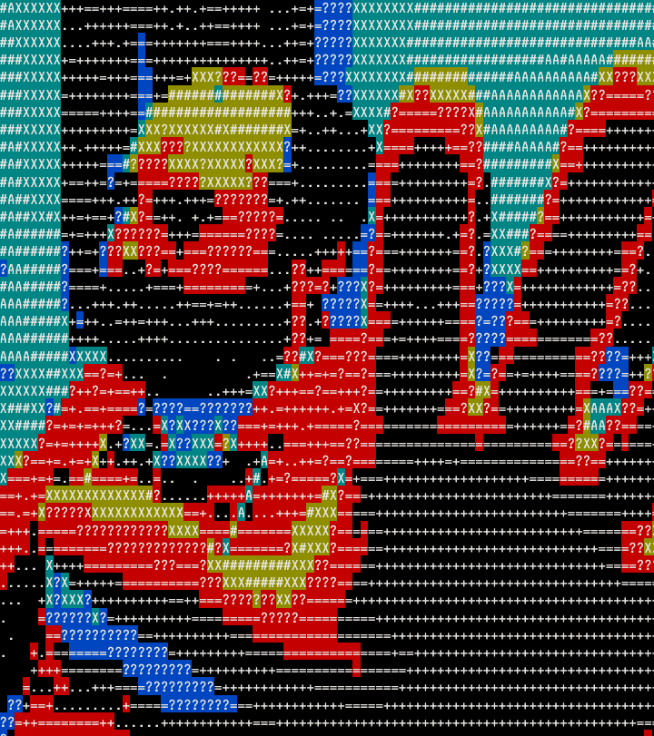
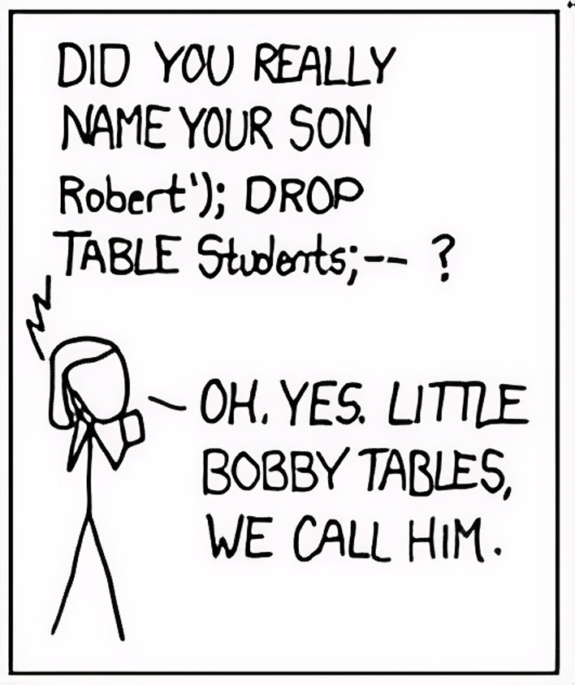

$ ./start_workshop.sh
Penetration Testing Game Day
Learning Web Security with OWASP
Jono Finger_
Southern California Linux Expo 2026 - UpScale
$ whoami

Jono Finger · Software engineer
github.com/jonocodes
Why Devs Should Care
if (you.write(code)) {
understand(how_it_breaks);
}
Penetration Testing
🛡️
Authorized
→
Attacks
→
Find Weaknesses
Legal & ethical security testing
Why Practice?
🎮
Learn faster by exploiting
Than by reading guidelines
🧪 Safe practice environments matter
What Is OWASP?
Open Web Application Security Project
🌍
Global
Community
Free
Resources
Open
Standards
OWASP Top 10
🔟
The most common
Most impactful
Web app vulnerabilities
Top 10 Categories
A01 Broken Access Control
A02 Crypto Failures
A03 Injection
A04 Insecure Design
A05 Misconfig
A06+...
A03: Injection
User Input
→
Executable Code
→
💥 Backend
Input isn't separated from logic
SQL Injection
Still happens today.
ORMs can only help so much.

A01: Broken Access Control
🔒 → 🔓
Users do things they shouldn't
"But the UI doesn't show that button"
≠ security
Cross-Site Scripting (XSS)
Comment:
<script>evil()</script>
Attacker injects JS
→
Victims execute it
OWASP Is Always Evolving
REST
→
GraphQL
→
???
Same problems, new surfaces
Your Browser Is a Tool
🔧
Network Tab
Console
Extensions
A lot of hacking needs no fancy tools
🧃 OWASP Juice Shop
⚠️ Intentionally Vulnerable
Modern web app
Built for learning security
github.com/juice-shop/juice-shop
Challenges & Scoring
1337
Covers OWASP Top 10
Progressive difficulty · Instant feedback
Where to Go Next
Web is just one slice 🍕
🐉
Kali Linux
Metasploit
🚩
CTF Events
DEF CON
📖
Ghost in the Wires
Kevin Mitnick
www.dgt.is/docs/pen-testing-game-day